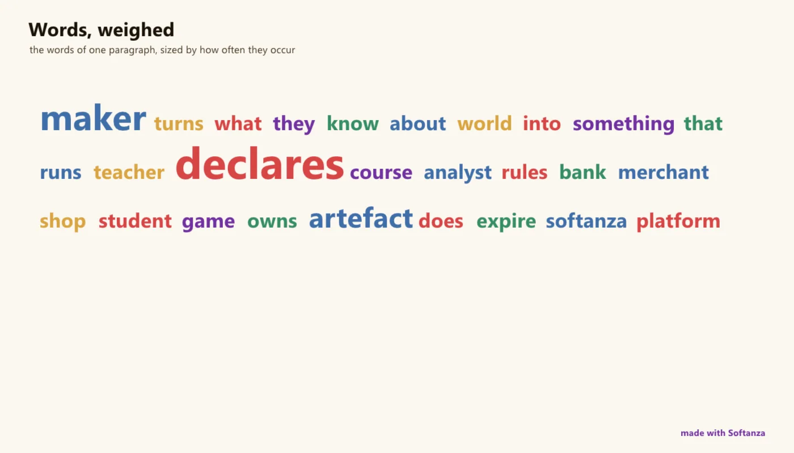

Traitement du langage et linguistique
Une chaîne classique, déterministe et entièrement embarquée ; plus simple que NLTK, un cran sous les modèles neuronaux de spaCy.
Mesuré contre: spaCy · NLTK · Stanza · Dossiers: base/linguistic · base/natural · base/learning · La page d'origine de l'Atlas

A deterministic, fully-embedded classic NLP pipeline (UAX#29 tokenization, 25-language Snowball stemming, an averaged-perceptron POS tagger reimplemented in Zig, VADER sentiment, RAKE + TextRank + TF-IDF keywords, WordNet, phonetics) with zero downloads and a one-line first contact. Its stated target is to beat NLTK on simplicity, and against NLTK it largely does. But it sits a full tier below spaCy and Stanza: NER is gazetteer-rule not neural, there is no dependency parsing, and the neural upgrades are wired but no-op without a local model, gated on the still-unstarted ggml/GGUF foundry.
Ce qu'un maker en fait, et ce qui se distingue
- Zero downloads: every model and lexicon is @embedFile'd, one-line first contact
- RAKE, TextRank and TF-IDF plus extractive summary in one engine
- NLTK's own averaged-perceptron POS model reimplemented in Zig with no ML runtime
- 25-language Snowball stemming at reference parity
Ce qui est dû
- The ggml bridge + GGUF foundry that turns every neural delegator real
- Statistical or neural NER above the gazetteer floor
- Restore the full WordNet graph (hyponyms, meronyms, antonyms, glosses)
- Dependency parsing, entirely absent
Un exemple, exécuté
Une consigne en langue naturelle s'exécute ; une phrase dit sa langue, son sentiment, ses lemmes.
? @@( Naturally("Create a list with [ 5, 3, 5, 1 ] and remove its duplicates").Result() )
? Q("The cat sat on the mat").Language()
? Q("running").Stemmed()
? @@( Q("running cats").Lemmatized() )
? Q("Softanza is a wonderful library").Sentiment()
? @@( StzTextQ("The cat sat on the mat. The dog barked.").Sentences() )[ 5, 3, 1 ] english run "run cat" positive [ "The cat sat on the mat.", "The dog barked." ]
exécuté le 2026-10-01 à 01:40 ; la même consigne en français, en arabe et en haoussa a tourné le 2026-09-30 à 23:10 dans la démo (page Apprendre)
Les couloirs, un par un
Les couloirs et leurs notes sont cités dans la langue de l'Atlas, l'anglais, tels qu'ils ont été lus à la source. lu à la source le Read from the source on 2026-09-16.